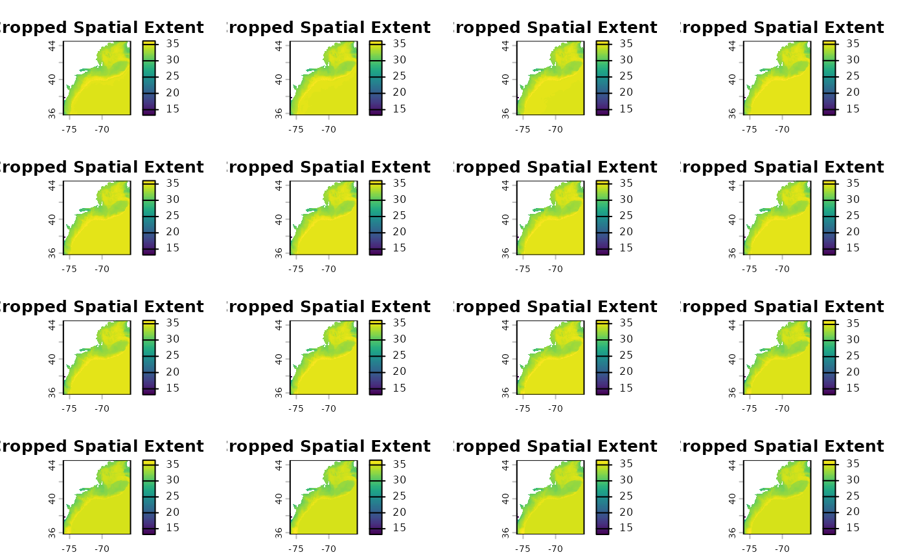
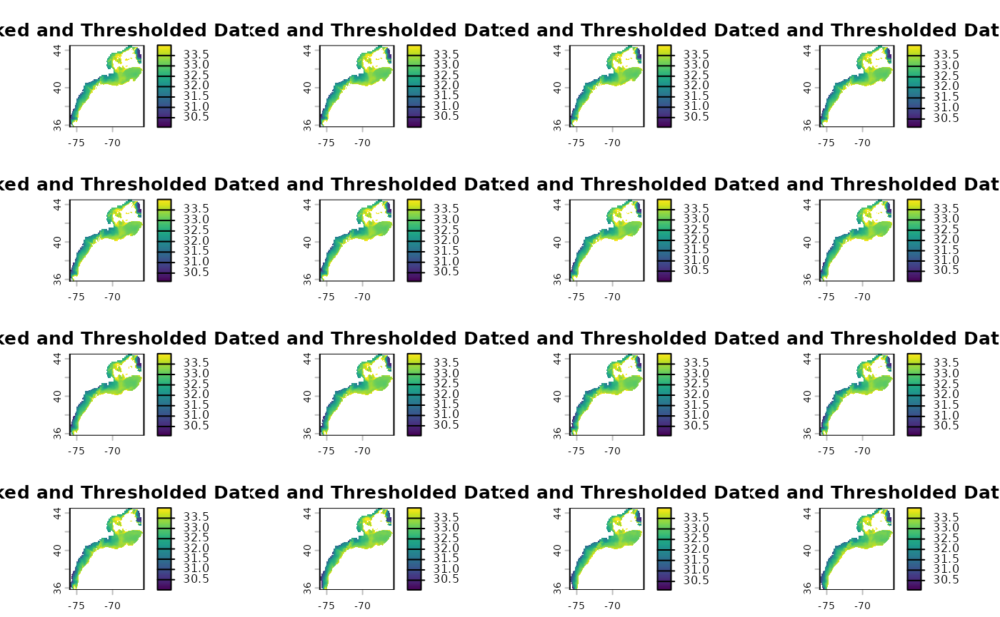

2D Timeseries
2d_timeseries.RmdPipeline Workflow Overview
The EDABUtilities package provides a continuous,
memory-efficient pipeline to transform raw spatial data (like large
NetCDF files) into actionable, tabular time series data.
This vignette demonstrates the Timeseries Pipeline
(_ts), which generally follows a 6-step progression:
Spatial Cropping (
crop_nc_2d): Load raw spatial files and immediately crop them to the bounding box of your study area to conserve memory.Quality Masking (
mask_nc_2d): Filter out unreasonable values (e.g., out-of-bounds salinity or landmass artifacts) and strictly mask the data to the polygon boundaries.Temporal Aggregation (
make_2d_summary_ts): Transition from spatial arrays to tabular time series. We summarize the spatial data by region (e.g., taking the mean over a polygon) and by time (e.g., daily layers to monthly averages).Climatology Baseline (
make_2d_climatology_ts): Filter the aggregated time series by specific reference periods (like summer months) to establish a baseline climatology.Anomaly Calculation (
make_2d_anomaly_ts): Compare the aggregated time series against the baseline climatology to calculate the final anomalies.Degree-Day Thresholds (
make_2d_deg_day_ts): Calculate the number of days above or below a reference threshold (e.g., salinity > 33) for each region and time period.
Step 0: Setup and Define Parameters
First, we load the required packages and define our core parameters, including our study area shapefile (Ecological Production Units - EPUs) and our variable of interest (Bottom Salinity).
library(here)
#> Error in `library()`:
#> ! there is no package called 'here'
library(EDABUtilities)
library(ggplot2)
#> Error in `library()`:
#> ! there is no package called 'ggplot2'
library(dplyr)
#>
#> Attaching package: 'dplyr'
#> The following objects are masked from 'package:stats':
#>
#> filter, lag
#> The following objects are masked from 'package:base':
#>
#> intersect, setdiff, setequal, union
# Define reference boundaries and thresholds
epu.shp <- system.file('data', 'EPU_NOESTUARIES.shp', package = 'EDABUtilities')
var.name <- 'BottomS'
min.S <- 30
max.S <- 34Step 1: Spatial Cropping
We start by reading in our daily NetCDF files. To save processing time downstream, we use crop_nc_2d to immediately crop the rasters to the bounding box of our shapefile.
data.crop <- EDABUtilities::crop_nc_2d(
data.in = c(system.file('data', 'GLORYS_daily_BottomSalinity_2019.nc', package = 'EDABUtilities'),
system.file('data', 'GLORYS_daily_BottomSalinity_2020.nc', package = 'EDABUtilities')),
shp.file = epu.shp,
var.name = var.name,
area.names = NA,
write.out = FALSE
)
#> Already standard format (-180:180)
#> Already standard format (-180:180)
terra::plot(data.crop[[2]], main = "Cropped Spatial Extent")
Step 2: Maksing and Quality control
Next, we filter the cropped data to only include valid salinity values (between 30 and 34) and mask out any water that falls outside our precise EPU polygons.
data.mask <- mask_nc_2d(
data.in = data.crop,
var.name = var.name,
min.value = min.S,
max.value = max.S,
shp.file = epu.shp,
binary = FALSE,
write.out = FALSE
)
terra::plot(data.mask[[1]], main = "Masked and Thresholded Data")
Step 3: Transition to Timeseries Aggregation
Here, the pipeline shifts from spatial rasters
(SpatRaster) to tabular data (data.frame). We
aggregate the daily spatial layers into regional monthly averages
specifically for the Mid-Atlantic Bight (MAB), Georges Bank (GB), and
Gulf of Maine (GOM).
data.ts = make_2d_summary_ts(data.in = data.mask,
shp.file = epu.shp,
var.name = var.name,
agg.time ='months',
statistic = 'mean',
file.time = 'annual',
area.names = c('MAB','GB','GOM'),
write.out = F)
# Combine the list of dataframes for plotting
ts_all <- dplyr::bind_rows(data.ts)
ggplot(ts_all, aes(x = time, y = value,color = factor(ls.id))) +
geom_line() +
facet_wrap(~area) +
theme_minimal() +
labs(title = "Monthly Mean Bottom Salinity by Region")
#> Error in `ggplot()`:
#> ! could not find function "ggplot"Step 4: Establish a Climatology Baseline
Using the aggregated tabular data, we establish a baseline climatology. In this example, we calculate the long-term mean specifically for the summer months (June through August).
clim.ts <- make_2d_climatology_ts(
data.in = data.ts,
start.time = 6,
stop.time = 8,
statistic = "mean",
write.out = FALSE
)
ggplot(clim.ts[[1]], aes(x = time, y = value, fill = area)) +
geom_bar(linewidth = 1,stat = 'identity',position = 'dodge') +
theme_minimal() +
labs(title = "Summer Climatology Baseline")
#> Error in `ggplot()`:
#> ! could not find function "ggplot"Step 5: Calculate Anomalies
Then, we calculate the anomalies by subtracting our summer
climatology baseline from the original aggregated timeseries. Note:
make_2d_climatology_ts returns a list, so we pass the first
dataframe into the anomaly function.
anom.ts <- make_2d_anomaly_ts(
data.in = data.ts,
climatology = clim.ts[[1]],
write.out = FALSE
)
#> Warning in make_2d_anomaly_ts(data.in = data.ts, climatology = clim.ts[[1]], :
#> Some observations in item 1 did not match the climatology and resulted in NA
#> anomalies.
#> Warning in make_2d_anomaly_ts(data.in = data.ts, climatology = clim.ts[[1]], :
#> Some observations in item 2 did not match the climatology and resulted in NA
#> anomalies.
anom_all <- dplyr::bind_rows(anom.ts)
ggplot(anom_all, aes(x = time, y = anom.value, color = area)) +
geom_hline(yintercept = 0, linetype = "dashed", color = "gray50") +
geom_line(linewidth = 1) +
facet_wrap(~ls.id, labeller = label_both) +
theme_minimal() +
labs(title = "Salinity Anomalies from Summer Climatology")
#> Error in `ggplot()`:
#> ! could not find function "ggplot"Step 6: Degree-Day Thresholds
If you are investigating specific threshold events (like marine
heatwaves or extreme salinity events), you can skip standard anomaly
calculations and use make_2d_deg_day_ts. This function
counts the number of days (nd), consecutive days
(nd.con), or degree days (dd) above or below a
specific reference point.
Here, we calculate the number of days the Bottom Salinity was above
33.
data.nday <- make_2d_deg_day_ts(
data.in = data.crop,
var.name = "BottomS",
statistic = "nd",
ref.value = 33,
type = "above",
shp.file = epu.shp,
area.names = c("MAB", "GB"),
write.out = FALSE
)
data.nday.all <- dplyr::bind_rows(data.nday)
ggplot(data.nday.all, aes(x = ls.id, y = value, fill = area)) +
geom_bar(stat = "identity", position = "dodge") +
theme_minimal() +
labs(title = "Number of Days with Salinity > 33",
x = "Year (Dataset ID)",
y = "Number of Days")
#> Error in `ggplot()`:
#> ! could not find function "ggplot"